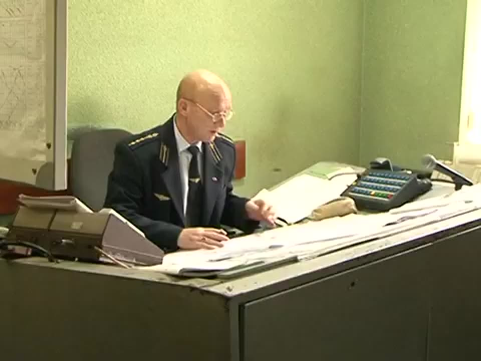

Диспетчерське керівництво
Основа організації експлуатаційної роботи — система диспетчерського керівництва: єдиноначальність і централізоване оперативне керівництво рухом на станціях, дільницях, напрямках і в районах мережі. Вона узгоджує дії всіх працівників, пов'язаних з рухом, і є умовою безпеки.
Рухом поїздів на дільниці керує поїзний диспетчер (ДНЦ), відповідальний за виконання графіка руху. Він має зв'язок з ДСП станцій, черговими депо, тяговими підстанціями та енергодиспетчером, а також поїзний радіозв'язок з машиністами. ДНЦ контролює своєчасне формування поїздів і забезпечення їх локомотивами.
Там, де немає автоматичного запису графіка, станції повідомляють ДНЦ час прибуття, відправлення або проходження кожного поїзда, а ДНЦ веде графік виконаного руху, відмічаючи всі порушення і їх причини.
Від кого до кого йдуть вказівки
- Старший дорожній диспетчер дає головні вказівки щодо руху на залізниці, наприклад на Південній залізниці.
- Дільничний (поїзний) диспетчер отримує ці вказівки і в кожному конкретному випадку передає їх черговим по станціях своєї дільниці.
- Черговий по станції виконує вказівки диспетчера на своїй станції.
Поїзд, що йде за графіком, черговий по станції відправляє без окремого запиту до диспетчера, бо цей поїзд уже закладений у графік руху. Для поїзда чи одиниці рухомого складу поза графіком черговий запитує поїзного диспетчера і відправляє її лише після його дозволу.

Накази поїзного диспетчера
Основні реєстровані накази
- циркулярний наказ про приймання і здачу чергування диспетчерами;
- про закриття і відкриття перегонів або окремих колій;
- про перехід з двоколійного руху на одноколійний і назад;
- про перехід з одних засобів сигналізації та зв'язку на інші;
- про відправлення поїздів по неправильній колії і з розмежуванням часом;
- про відправлення поїздів з небезпечними вантажами;
- про приймання і відправлення пасажирських, людських поїздів на колії й з колій, не передбачених ТРА;
- про призначення поїздів, не передбачених графіком, і відміну поїздів;
- про пропуск окремих локомотивів, ССРС і господарських поїздів;
- про рух поїздів при несправності АЛСН і ПРЗ;
- про введення в графік пасажирських поїздів, що запізнюються.
Накази ДНЦ черговий по станції записує в журнал ДУ-58, повторює диспетчеру зміст і називає прізвище. Переконавшись у правильності, диспетчер затверджує наказ словом «Виконуйте».
Структура наказу
Графік руху поїздів
Графік руху поїздів (ГРП) — основний нормативно-технологічний документ, що об'єднує роботу станцій, локомотивного та вагонного господарств, дільниць і напрямків в єдиний транспортний конвеєр. Він встановлює розміри руху пасажирських і вантажних поїздів, серії локомотивів, норми маси й довжини составів.
Як побудована сітка
- Горизонтальні лінії — осі роздільних пунктів дільниці (відстані в масштабі).
- Вертикальні лінії: 24 основні смуги (години), кожна поділена на 6 частин по 10 хв; півгодинні лінії — пунктир.
- Рух поїзда — похила лінія. Точка перетину з віссю станції — час прибуття, відправлення чи проходження. Хвилини ставлять у тупому куті за ходом поїзда.
- Стоянка на станції — горизонтальний відрізок по осі станції.
Умовні позначення поїздів
| Поїзд | Лінія | Зразок |
|---|---|---|
| Пасажирські постійного та літнього щоденного обертання, поштово-багажні | Суцільна червона (або жирна чорна/синя) | |
| Пасажирські разового призначення, інші літні | Пунктирна червона | |
| Вантажні, вивізні, передаточні, господарські | Суцільна тонка чорна або синя | |
| Підвищеної маси й довжини | Подвійна суцільна | |
| Збірні | Штрих-пунктирна | |
| Диспетчерські локомотиви, підштовхувачі | Пунктирна |
На основі графіка складають службовий розклад — таблиці часу прибуття, відправлення і стоянок кожного поїзда.
Елементи графіка
- Перегінний час ходу поїзда;
- станційні та міжпоїзні інтервали;
- технологічні норми часу стоянок на станціях.
На одноколійних ділянках основні станційні інтервали:
- інтервал схрещення — мінімальний час від прибуття (проходження) поїзда одного напрямку до відправлення на той самий перегін зустрічного поїзда;
- інтервал неодночасного прибуття зустрічних поїздів — від прибуття одного до прибуття (проходження) зустрічного;
- інтервал попутного прямування;
- інтервали неодночасного відправлення і прибуття, прибуття і відправлення попутних поїздів.